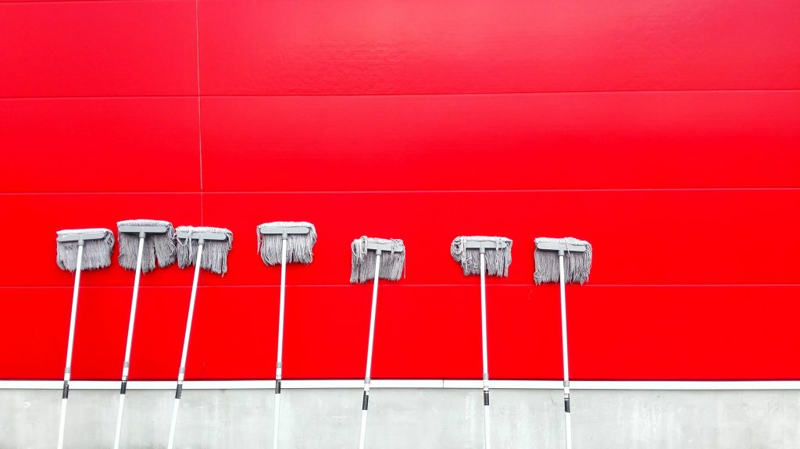
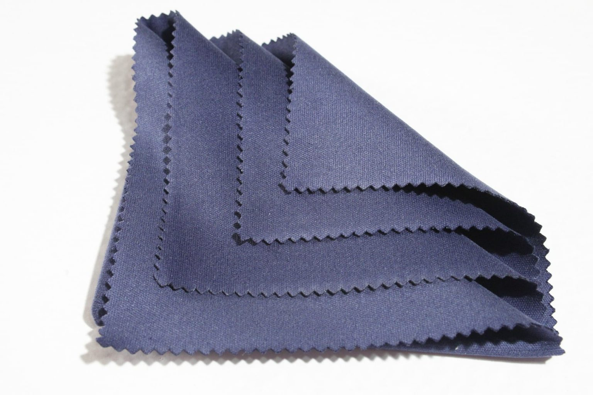
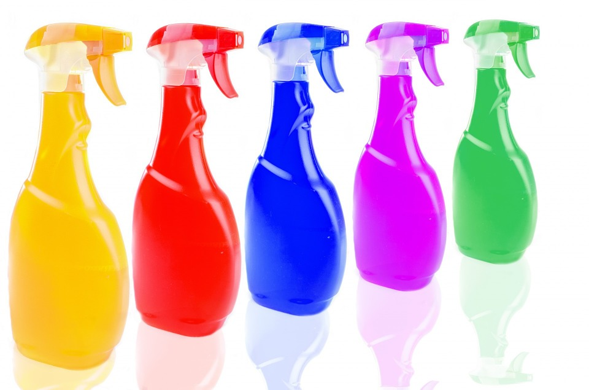
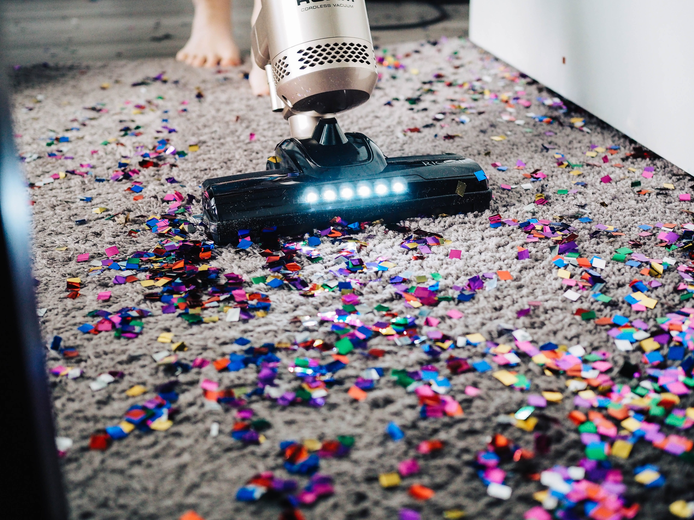
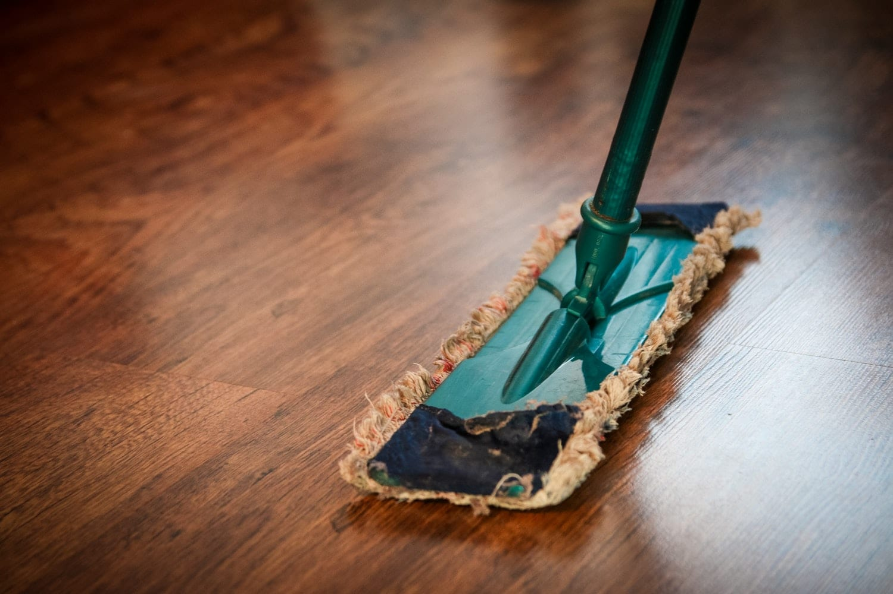
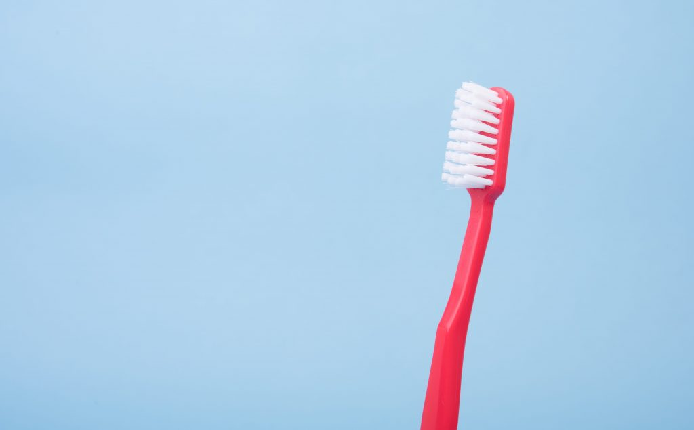
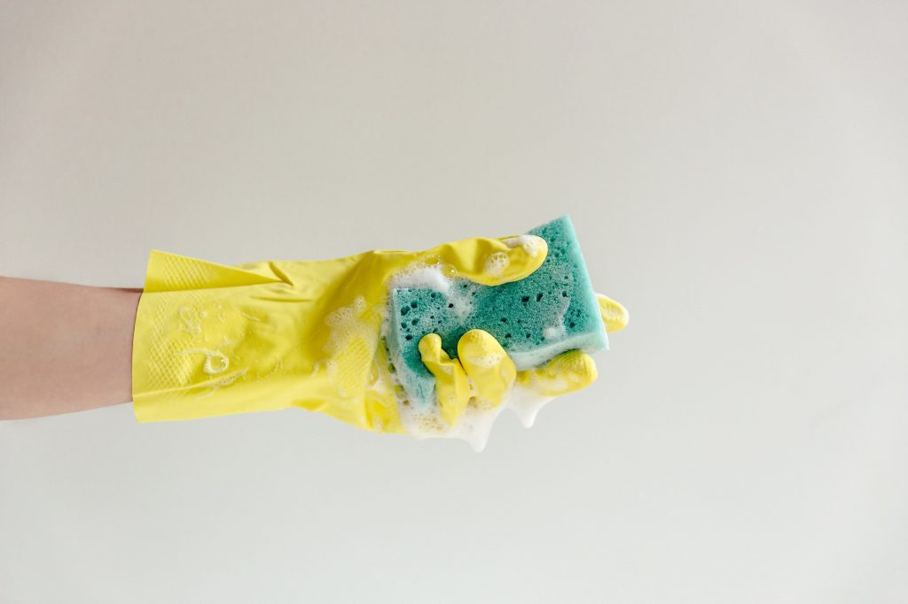
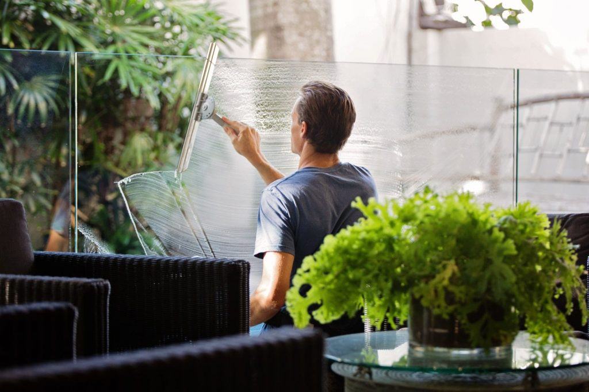
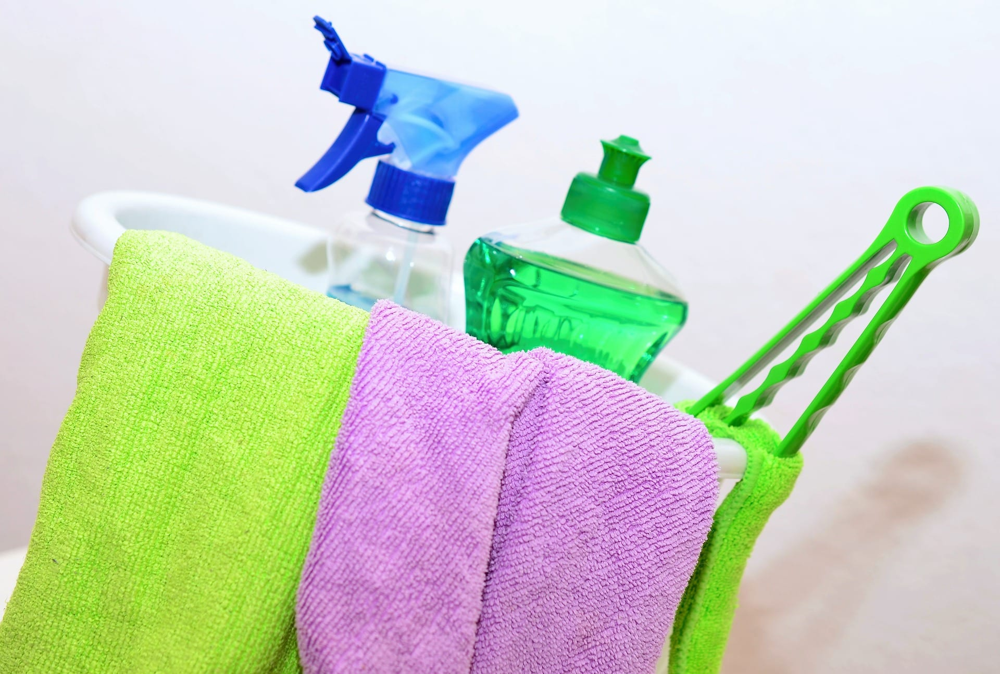

<!DOCTYPE>
    <html>
        <head>
          <link rel="stylesheet" href="css/index.css">
          </html>
          <title>my 10  cleaning agents</nav></title>
        </head>
        <body>
          <nav class="nav Bar">          
        <div class="navdiv">
            <div class="logo"><a href="#"> </div>
            <ul>
              <li><a href="#" class="home_btn">Home</a></li>
              <li><a href="contact.html" class="contact_btn">contact</a></li>
              <li><a href="about.html" class="about_btn">About</a ></li>
          </div>
        </div>
        <div>
          <h1 style="color: black;text-align: center;" >The 10 Home Cleaning Materials You Need
          </h1>
          </div>
          <div class="agent0"></div>
          <div class="agent1">
          <div>
          <div>
            
            <P>Home cleaning isn’t always as straightforward as people like it to believe. Each area of our home, be it the kitchen,</P>
              <p>bedroom or bathroom has different cleaning needs and requires different materials to clean it. Having all the right</p> 
              <p> bedroom or bathroom has different cleaning needs and requires different materials to clean it. Having all the right</p>
                <p> materials on hand can often be difficult because we don’t always know what materials we need to have for every occassion.</p> 
               <p> This is why, in today’s article, we will go over some of the essential home cleaning materials you need to have. It is important </p>
               <p>to make clear that this is by no means a comprehensive list, rather just a list of essential products needed for everyday cleaning.</p> 
                <p> Simply add the items below to your shopping list and never have to think again about what cleaning materials you need around the house.</p>
                 Here are the 10 essential home cleaning materials you need.</P>
          </div>
          <div>
            <h1 style="color: black;">1.Microfibre Cloth</h1>
            
            <p>Microfibre cloths are super handy around the house. With a little bit of water or cleaning solution,</p>
                <p>they can help clean most surfaces. What gives microfibre cloths their edge over regular cloths is their texture.</p>
                <p> Unlike other types of cloths, these are far less likely to leave behind scratches or streaks on more delicate</p>
                 <p> surfaces such as TV screens and windows.</p>

              <p>Take it from us, microfibre cloths are a no-brainer!</p>
          </div>
          <div>
            <h1 style="color: black;">2.Bootle Of Spray</h1>
            
            <p>It’s always helpful to have one of these lying around the house. You can either fill them up with water </p>
              <p>to provide a little more moisture to the area you’re cleaning or use them to make your own cleaning solution. </p>  
                <p>They also help you avoid dripping water or cleaning solution in other areas of your home!</p></p>
          </div>
          <div>
            <h1 style="color: black;">3.Broom and dustpan</h1>
            
            <p>If you’re like the rest of us, you won’t like the thought of dirt, lint and other particles flying around your home.</p>
               <p>This is where a good old fashioned broom and dustpan combination come in handy.</p>  
                <p>You might say ‘don’t I have a hoover for this?’ Good question. Hoovers do an excellent job in cleaning away dust. </p>
              <p> However, when it comes to larger particles small surface areas to clean, it becomes more effective to simply</p> 
               <p> scoop up with a broom and dustpan rather than to haul a bulky vacuum cleaner to the other side of the house.</p>
          </div>
          <div>
            <h1 style="color: black;">4.Hoover</h1>
            
            <p>Although a broom and dustpan work better for smaller areas and larger particles, when it comes to removing dust from your home,</p>
                 <p>here is no substitute for a good hoover.Hoovers effectively remove dust, dirt, pet hair and other undesirable particles </p>
              <p>from both the air and floor surfaces in your home. Some hoovers are also fitted with a HEPA filter that helps remove pollen. </p>   
               <p>This can help reduce the risk of allergic reactions at home.</p>
          </div>
          <div>
            <h1 style="color: black;">5.Moop and bucket</h1>
            
            <p>Even though a broom and hoover can help keep your hardwood floors fairly clean, they can be less effective when dealing</p>
                <p>with stubborn dirt and grime.This is where our mop and bucket come in. Not only do these effectively clean dirt and grime, </p> 
                <p>that they also make your floors shine, helping you make that killer first impression.</p>
          </div>
          <div>
            <h1 style="color: black;">6.Hand Scrubing brush</h1>
            
            <p>When faced with tough stains, more delicate cleaning devices such as a sponge or a microfibre cloth may not be enough to get the job done.</p>
             <p>In these cases, it is good to have a hand scrub brush lying around. With this handy tool, you can remove tougher stains with a fr</p>   
              <p>the elbow grease compared to using cloths or sponges.</p>
          </div>
          <div>
            <h1 style="color: black;">7.Old toothbrush</h1>
            
            <p>As great as a scrub brush is, its size prevents it from removing stains from more difficult to reach areas. This is where an old toothbrush comes in handy.</p>
              <p> Once you’ve disinfected an old toothbrush, you can use this and a little bit of cleaning liquid to get rid of those pesky stains hiding in the nooks and </p> 
              <p>crannies of your home. Another use of an old toothbrush is to remove limescal</p>
          </div>
          <div>
            <h1 style="color: black;">8.Sponge</h1>
            
            <p>Besides their obvious use to clean dishes, sponges have a host of other cleaning uses around the house. </p>
              <p>They can also be used to clean a variety of surfaces. A major mistake we’ve seen people make time and time </p>
             <p>again is forgetting to clean their sponges. This causes germs and bacteria to build up on the sponge,</p> 
              <p> which can then be transferred to your plates and other surfaces around the house.</p>
               <p> Find out how to clean your sponge and learn some of the other common cleaning mistakes we’ve seen people make.</p>
          </div>
          <div>
            <h1 style="color: black;">9.Squeegee</h1>
            
            <p>Squeegees are an effective way to clean windows and other glass surfaces such as shower doors and mirrors</p>
                <p>To make sure you don’t leave behind any streaks or marks during the cleaning process, we recommend using</p>
                <p>a high quality squeegee with a sharp blade.</p>
          </div>
          <div>
            <h1 style="color: black;">Cleaning liquid</h1>
            
            <p>So we might be cheating here since ‘cleaning liquids’ is more than one item, but it’s important that</p> 
             <p>you have the right materials to clean your home effectively. In reality, we could have a very </p> 
              <p>large number of cleaning liquids in this list, but we have kept it to just the essentials you need for everyday home cleaning.</p>
          </div>
          <div>
            <h1 style="color: black;">Essential Cleaning liquid</h1>
            <p>1) Dishwashing liquid</p>
            <p>2) Laundry detergent (you can also use the powder or tablets)</p>
            <p>3) White vinegar</p>
            <p>4) All purpose cleaner</p>
            <p>5) Toilet bleach</p>
            <p>6) Window cleaner (optional)</p>
          </div>
          <div>
            <h1 style="color: black;">That's all folks</h1>
            <p>We hope this article helped take away some of the confusion surrounding what home cleaning materials you need to have on hand.

                On the other hand, if you just want to put up your feet and have a great clean at the same time, feel free to book your next clean with glimmr.</p>
          </div>
          </div>
          <div>
            <h1 style="color: rgb(35, 59, 112);">Other articles</h1>
            <p>Using Lemon Fruit as a Cleaning Product</p>
            <p>East London</p>
            <p>7 Ways to Make Your Bedroom More Sleep-Friendly</p>
            <p>Cleaning on a Budget: Washing Machines</p>
            <p>Cleaning Tips After Your Move
                7 Organization Hacks to Help Your Home Stay Clutter-Free!</p>
                <p>Questions to ask before hiring a Cleaning OR Removals Company
                    The Mental Benefits of Having a Clean Home</p>
                    <p>10 Ways to Encourage your Little Ones to Clean Their Rooms
                        10 + 1 Tips on Post Christmas Cleaning</p>
     </div>
        